Texto extraído da edição fornecida, sem atualização normativa. Consulte a página original para conferir tabelas, formulários e instruções ilustradas. A numeração dos links corresponde à página do arquivo PDF.
PROVIMENTO E VACÂNCIA DE CARGOS E FUNÇÕES COMISSIONADAS
DAP 06.026
Ver página original — tabelas, imagens e diagramas
É dever do servidor/empregado público, da Organização Militar (OM) e da
Região Militar (RM) ler e acompanhar a atualização da legislação que se
refere aos assuntos tratados neste Caderno de Orientação.
Constituição
Federal da
República
Federativa do Brasil
Lei nº 8.112, de 11
de dezembro de
1990
Lei nº 14.204, de 16
de setembro de
2021
Decreto nº 10.829,
de 5 de outubro de
2021
Ver página original — tabelas, imagens e diagramas
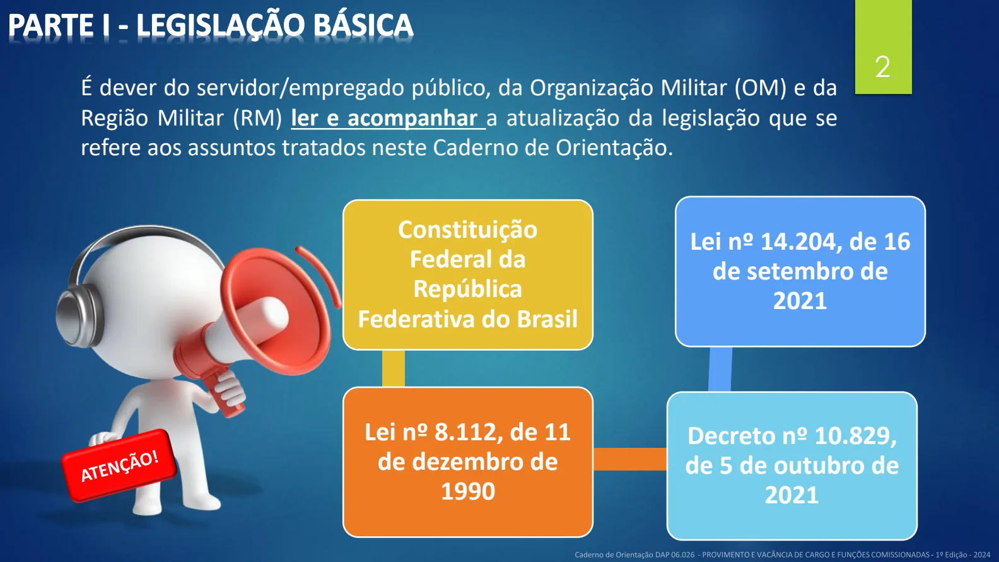
Esta página contém conteúdo gráfico. Consulte a reprodução original abaixo.
Ver página original — tabelas, imagens e diagramas
VACÂNCIA: A vacância é um ato administrativo pelo qual um cargo ou uma função público(a)
torna-se vago(a), desocupado(a), sem titular.
PROVIMENTO: é o ato administrativo de investidura no cargo público, feito pela
autoridade competente.
NOMEAÇÃO OU DESIGNAÇÃO: é o provimento originário de um cargo
ou função público(a) vago(a). É publicada no Diário Oficial da União
(DOU).
A nomeação ocorre para os Cargos Comissionados Executivos (CCE) e a
designação ocorre para as Funções Comissionadas Executivas (FCE).
EXONERAÇÃO OU DISPENSA: é a desinvestidura de cargo ou função público(a), formalizada
mediante publicação de ato no DOU.
A exoneração ocorre para os Cargos Comissionados Executivos (CCE) e a dispensa ocorre para
as Funções Comissionadas Executivas (FCE).
Ver página original — tabelas, imagens e diagramas
CCE: Cargo Comissionado Executivo
FCE: Função Comissionada Executiva
São cargos e funções comissionados,
destinados às atividades de direção, de
chefia e de assessoramento.
Ver página original — tabelas, imagens e diagramas
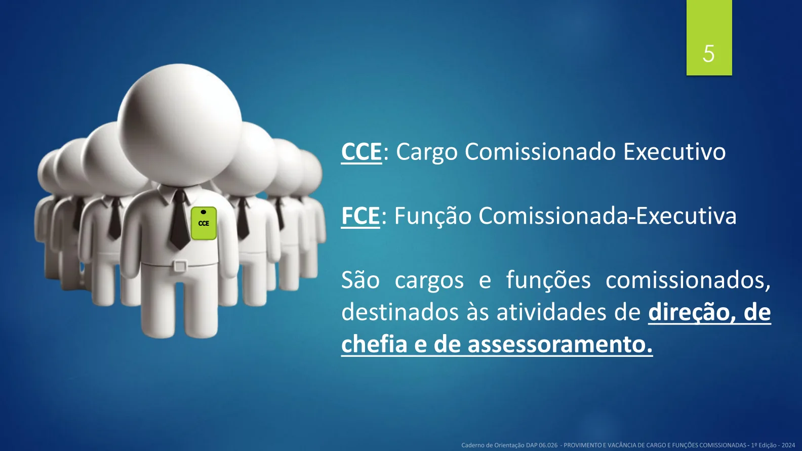
Requisitos e critérios
PDF · p. 6Esta página contém conteúdo gráfico. Consulte a reprodução original abaixo.
Ver página original — tabelas, imagens e diagramas
Requisitos e critérios
PDF · p. 71. São critérios GERAIS para a ocupação de cargos em comissão e
de funções de confiança:
a) idoneidade moral e reputação ilibada.
b) perfil profissional ou formação acadêmica compatível com o
cargo em comissão ou com a função de confiança para o qual
tenha sido indicado
c) não enquadramento nas
hipóteses de inelegibilidade
previstas no inciso I do caput do art.
1º da Lei Complementar nº 64, de 18
de maio de 1990.
Ver página original — tabelas, imagens e diagramas
Requisitos e critérios
PDF · p. 81. São critérios ESPECÍFICOS para a ocupação de cargos em
comissão e de funções de confiança:
Além de atender aos critérios gerais, os ocupantes de CCE ou de FCE de NÍVEIS 5 A 8
atenderão, NO MÍNIMO, a um dos seguintes critérios específicos:
a) possuir experiência profissional de, no mínimo, dois anos em
atividades correlatas às áreas de atuação do órgão ou da entidade ou
em áreas relacionadas às atribuições e às competências do cargo ou
da função.
b) ter ocupado cargo em comissão ou função de confiança em
qualquer Poder, inclusive na administração pública indireta, de
qualquer ente federativo por, no mínimo, dois anos.
Ver página original — tabelas, imagens e diagramas
Requisitos e critérios
PDF · p. 91. São critérios ESPECÍFICOS para a ocupação de cargos em
comissão e de funções de confiança (cont.):
Além de atender aos critérios gerais, os ocupantes de CCE ou de FCE de NÍVEIS 5 A 8
atenderão, NO MÍNIMO, a um dos seguintes critérios específicos:
c) possuir título de especialista, mestre ou doutor em área correlata às áreas
de atuação do órgão ou da entidade ou em áreas relacionadas às atribuições
do cargo ou da função.
d) ser servidor público ocupante de cargo efetivo
de nível superior ou militar do círculo hierárquico
de oficial ou oficial-general.
e) ter concluído ações de desenvolvimento com carga horária mínima
acumulada de cento e vinte horas ou obtido certificação profissional
em áreas correlatas ao cargo ou à função para o qual tenha sido
indicado.
Ver página original — tabelas, imagens e diagramas
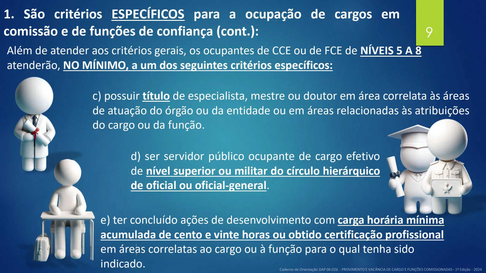
Requisitos e critérios
PDF · p. 101. São critérios ESPECÍFICOS para a ocupação de cargos em
comissão e de funções de confiança:
Além de atender aos critérios gerais, os ocupantes de CCE ou de FCE de NÍVEIS 9 A 11
atenderão, NO MÍNIMO, a um dos seguintes critérios específicos:
a) possuir experiência profissional de, no mínimo, três anos em
atividades correlatas às áreas de atuação do órgão ou da entidade ou
em áreas relacionadas às atribuições e às competências do cargo ou
da função.
b) ter ocupado cargo em comissão ou função de confiança em
qualquer Poder, inclusive na administração pública indireta, de
qualquer ente federativo por, no mínimo, três anos.
Ver página original — tabelas, imagens e diagramas
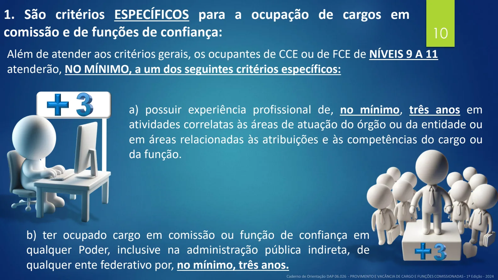
Requisitos e critérios
PDF · p. 111. São critérios ESPECÍFICOS para a ocupação de cargos em
comissão e de funções de confiança (cont.):
Além de atender aos critérios gerais, os ocupantes de CCE ou de FCE de NÍVEIS 9 A 11
atenderão, NO MÍNIMO, a um dos seguintes critérios específicos:
c) possuir título de especialista, mestre ou doutor em área correlata às áreas de
atuação do órgão ou da entidade ou em áreas relacionadas às atribuições do
cargo ou da função.
d) ser servidor público ocupante de cargo efetivo de
nível superior ou militar do círculo hierárquico de
oficial ou oficial-general.
e) ter concluído ações de desenvolvimento com carga horária mínima
acumulada de cento e vinte horas ou obtido certificação profissional
em áreas correlatas ao cargo ou à função para o qual tenha sido
indicado.
Ver página original — tabelas, imagens e diagramas
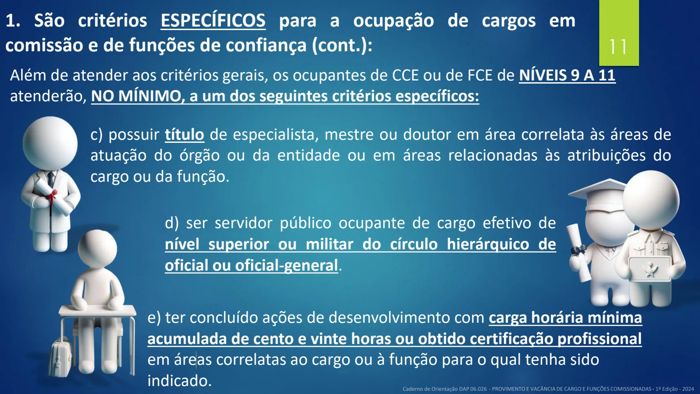
Requisitos e critérios
PDF · p. 1212ATENÇÃO!
Os CRITÉRIOS ESPECÍFICOS não precisam ser cumpridos de maneira
cumulativa, bastando que apenas um deles seja atendido pelo indicado.
No caso das AÇÕES DE DESENVOLVIMENTO,faz-se necessário apresentar os
certificados ou comprovantes de realização das ações de desenvolvimento
ou da certificação profissional em áreas correlatas ao cargo ou à função
para o qual tenha sido indicado.
Ver página original — tabelas, imagens e diagramas
Nomeação para CCE
PDF · p. 13Esta página contém conteúdo gráfico. Consulte a reprodução original abaixo.
Ver página original — tabelas, imagens e diagramas
Nomeação para CCE
PDF · p. 14Para os CCE, NÍVEIS 1 A 4, SOMENTE poderão ser
NOMEADOS servidores ocupantes de cargo efetivo,
empregados permanentes da administração pública e
militares.
Para as FCE SOMENTE poderão ser designados servidores ocupantes de
cargos efetivos oriundos de órgão ou de entidade de quaisquer dos
Poderes da União, dos Estados, do Distrito Federal e dos Municípios.
O CCE dos NÍVEIS 5 A 11 são de livre nomeação, sendo que 60% devem ser
servidor de carreira.
Ver página original — tabelas, imagens e diagramas
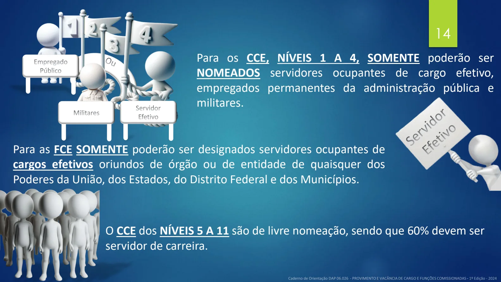
Remuneração e vínculos
PDF · p. 15Esta página contém conteúdo gráfico. Consulte a reprodução original abaixo.
Ver página original — tabelas, imagens e diagramas
Remuneração e vínculos
PDF · p. 16O servidor efetivo, o empregado permanente da
administração pública e o militar nomeados para CCE
poderão optar por uma das seguintes formas de
remuneração:
a) a remuneração do CCE acrescida dos anuênios já incorporados à
remuneração;
b) a diferença entre a remuneração do CCE e a remuneração do
cargo efetivo, do emprego ou do posto ou da graduação;
c) a remuneração do cargo efetivo, do emprego ou do posto ou da
graduação, acrescida do valor do CCE, para os níveis 1 a 4; ou
d) a remuneração do cargo efetivo, do emprego ou do posto ou da
graduação acrescida do percentual de 60% (sessenta por cento)
do valor do CCE, para os níveis 5 a 11.
O servidor designado para FCE receberá a remuneração do cargo efetivo
acrescida do valor da respectiva função de confiança.
1. CCE:
2. FCE:
Ver página original — tabelas, imagens e diagramas
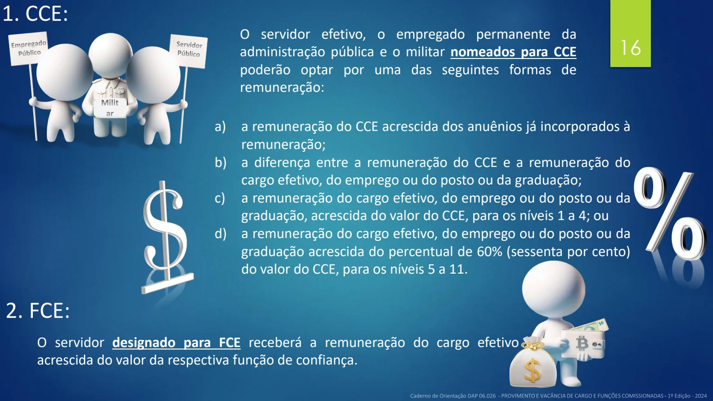
Remuneração e vínculos
PDF · p. 17Os CCE ocupados por servidores efetivos, por
empregados permanentes da administração pública ou
por militar e as FCE:
a) NÃO se incorporarão à remuneração, ao salário ou ao
soldo;
b) NÃO servirão de base de cálculo para qualquer outra
parcela remuneratória; e
c) NÃO integrarão os proventos de aposentadoria e de
pensão, ressalvadas as opções de que tratam o § 2º do
art. 4º da Lei nº 10.887, de 18 de junho de 2004, e o §
1º do art. 16 da Lei nº 12.618, e 30 de abril de 2012.
Ver página original — tabelas, imagens e diagramas
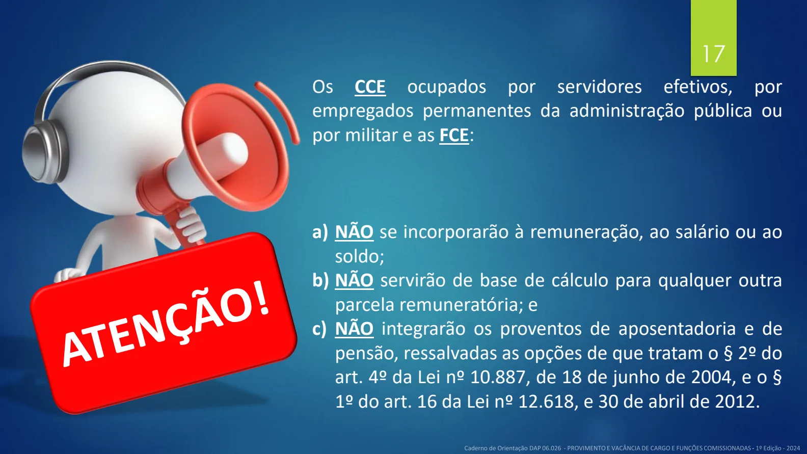
Posse, exoneração e dispensa
PDF · p. 18Esta página contém conteúdo gráfico. Consulte a reprodução original abaixo.
Ver página original — tabelas, imagens e diagramas
Posse, exoneração e dispensa
PDF · p. 19POSSE: ocorrerá no prazo de 30 (trinta) dias
contados da publicação da portaria de
nomeação no DOU.
A posse em cargo público dependerá de prévia
inspeção médica oficial.
1. CCE:
2. FCE:
EXERCÍCIO: 15 (quinze) dias o prazo para o
servidor empossado entrar em exercício
contados da posse.
Quando se tratar de designação para FCE, o início do exercício é o dia da
publicação no DOU, salvo se o servidor estiver de licença ou de férias, hipótese
em que recairá no primeiro dia útil após o término do impedimento, o que não
poderá exceder a trinta dias da publicação, caso em que o ato de designação
deverá ser tornado sem efeito.
Ver página original — tabelas, imagens e diagramas
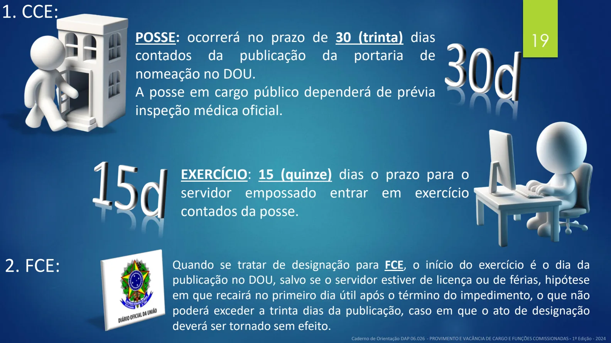
Posse, exoneração e dispensa
PDF · p. 20A EXONERAÇÃO do CCE, e a DISPENSA da FCE, dar-se-ão a
juízo da autoridade competente ou a pedido do próprio
servidor.
O servidor exonerado do cargo em comissão perceberá
indenização relativa ao período das férias a que tiver direito e
ao incompleto, na proporção de um doze avos por mês de
efetivo exercício, ou fração superior a 14 dias.
Os servidores investidos em CCE e em FCE na categoria de DIREÇÃO têm
substitutos eventuais, previamente designados pela autoridade competente
ou indicados no regimento interno, os quais fazem jus à retribuição
(somente nessas condições) quando do afastamento dos titulares, qualquer
que seja a quantidade de dias.
Os ocupantes de CCE e de FCE na categoria de
ASSESSORAMENTO NÃO têm direito a substitutos
remunerados.
Ver página original — tabelas, imagens e diagramas
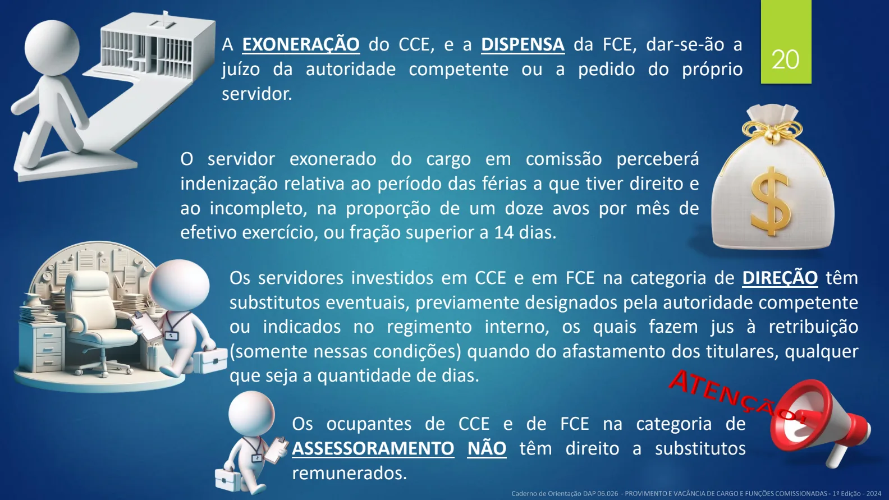
Documentos necessários
PDF · p. 21Esta página contém conteúdo gráfico. Consulte a reprodução original abaixo.
Ver página original — tabelas, imagens e diagramas
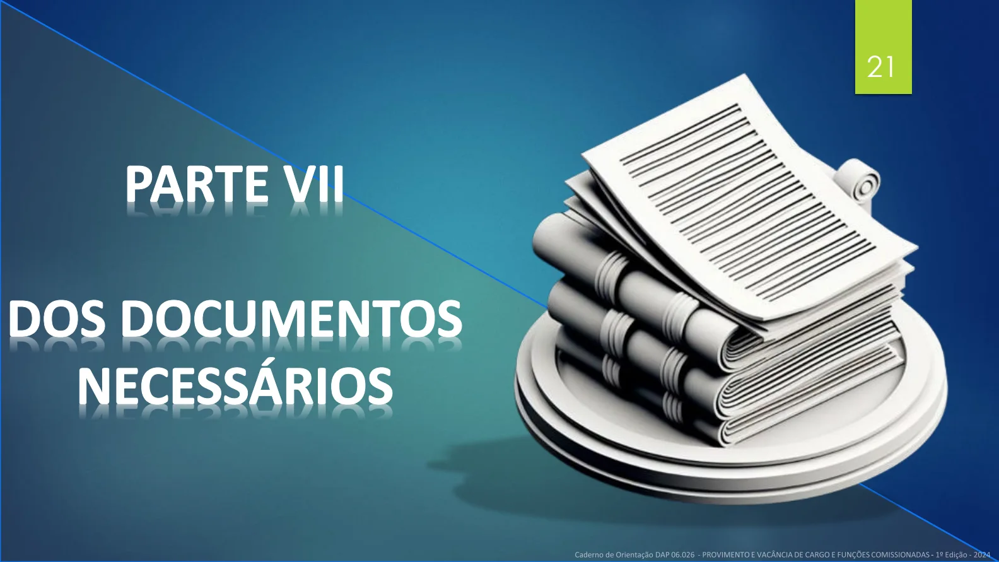
Documentos necessários
PDF · p. 22DOCUMENTO RESPONSÁVEL PELO
FORNECIMENTO OBSERVAÇÕES
DIEx de indicação, com a
documentação necessária OM, via RM Anexo A
Declaração de não acumulação de
cargo Servidor Anexo B
Declaração de não percebimento
de seguro-desemprego (para não
servidores)
Servidor Anexo C
Declaração de bens e valores Servidor Anexo D
Formulário de postulante OM/Servidor/Dirigente OM Anexo E
Portaria de nomeação (CCE) DAP Anexo F
Portaria de designação (FCE) DAP Anexo G
Termo de posse e de exercício para
o CCE ou FCE OM Anexo H
Laudo de inspeção de saúde Servidor -
1. DOCUMENTAÇÃO NECESSÁRIA PARA NOMEAÇÃO/DESIGNAÇÃO:
Ver página original — tabelas, imagens e diagramas
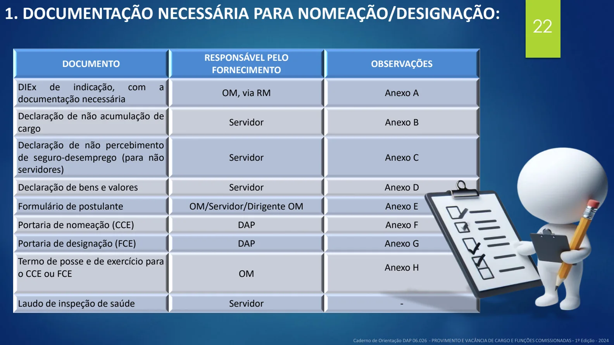
Documentos necessários
PDF · p. 23DOCUMENTO RESPONSÁVEL PELO
FORNECIMENTO OBSERVAÇÕES
DIEx de solicitação de
exoneração/dispensa, com a
documentação necessária
OM, via RM Anexo I
Requerimento, se for a pedido Servidor
Elaborado no SPED 3.0,
conforme modelo do item 3
da Parte VII deste Caderno
Declaração de bens e valores Servidor Anexo D
Portaria de exoneração (CCE) DAP Anexo J
Portaria de dispensa (FCE) DAP Anexo K
2. DOCUMENTAÇÃO NECESSÁRIA PARA EXONERAÇÃO/DISPENSA:
Ver página original — tabelas, imagens e diagramas
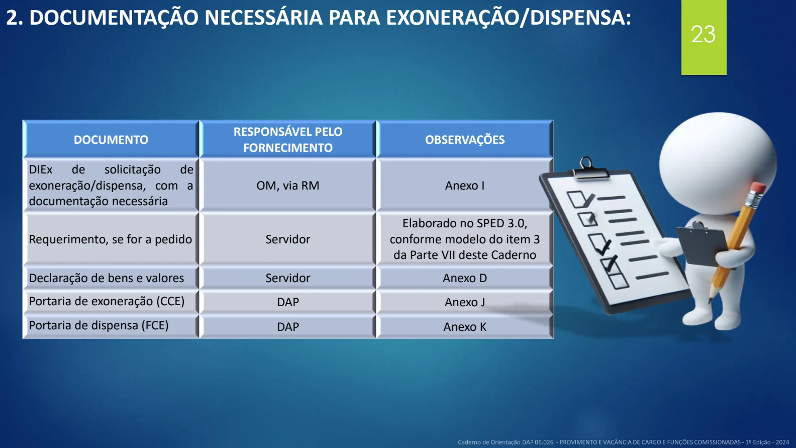
Documentos necessários
PDF · p. 24Esta página contém conteúdo gráfico. Consulte a reprodução original abaixo.
Ver página original — tabelas, imagens e diagramas
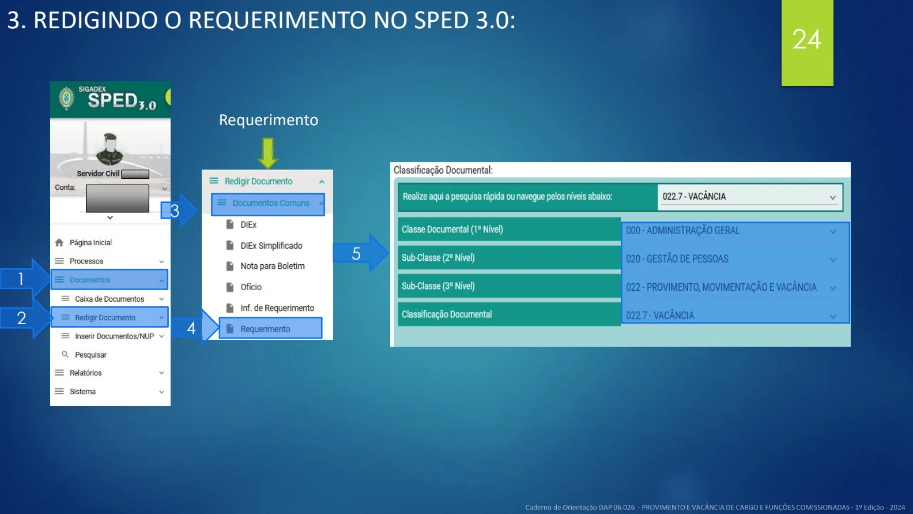
Esta página contém conteúdo gráfico. Consulte a reprodução original abaixo.
Ver página original — tabelas, imagens e diagramas
1. TRAMITAÇÃO PARA A NOMEAÇÃO /DESIGNAÇÃO:
*Nos casos Cargo de Direção e Função Gratificada-FG de magistério, a indicação deve tramitar pelo Departamento de Educação e Cultura do Exército - DECEx ou Departamento de Ciência e
Tecnologia - DCT
1. Enviar DIEx para a DAP , via RM, com a
indicação para o CCE ou para a FCE*, com
o Formulário de Postulante e
documentação necessária, conforme o
caso.
Obs: o Formulário deve ser assinado pela
autoridade máxima da OM.
1. Elaborar e expedir a portaria
de nomeação/designação.
2. Publicar a portaria no DOU.
Preencher, assinar e entregar na OM:
a) a declaração de não acumulação de
cargos;
b) Declaração que não percebe seguro-
desemprego (caso de não servidor);
c) a declaração de bens e valores; e
d) Laudo de inspeção de saúde, nos casos de
CCE
1. Elaborar termo de posse e/ou
exercício, para assinaturas, e respectiva
nota de posse e/ou exercício para
publicação no Boletim Interno.
2. Realizar upload do processo no
Assentamento Funcional Digital-AFD
3. Arquivar o processo junto à pasta
funcional do servidor
OM
DAP
SERVIDOR
OM
Ver página original — tabelas, imagens e diagramas
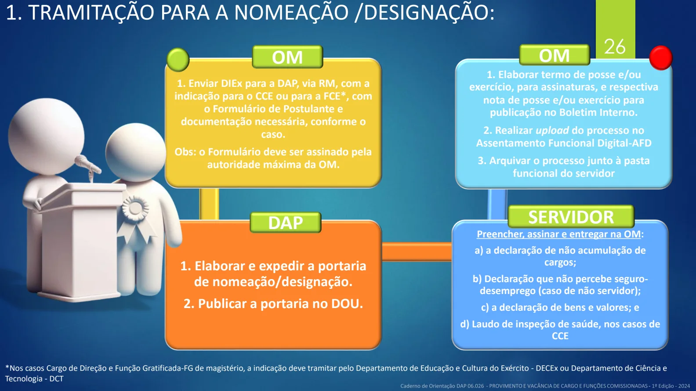
2. TRAMITAÇÃO PARA A EXONERAÇÃO /DISPENSA:
*Nos casos CCE ou FCE Cargo de Direção e Função Gratificada-FG de magistério, a indicação deve tramitar pelo Departamento de Educação e Cultura do Exército - DECEx ou Departamento
de Ciência e Tecnologia - DCT
1. Encaminhar DIEX para a DAP*, via
RM, tratando da solicitação, com
requerimento do servidor, se for a
pedido, bem como com a declaração
de bens e valores
1. Elaborar e expedir a portaria de
exoneração/dispensa.
2. Publicar a portaria no DOU.
1. Elaborar nota acerca da
exoneração ou dispensa para
publicação no Boletim Interno.
. Realizar upload do processo no
Assentamento Funcional Digital-AFD
3. Arquivar o processo junto à pasta
funcional do servidor
OM
DAP
OM
Ver página original — tabelas, imagens e diagramas
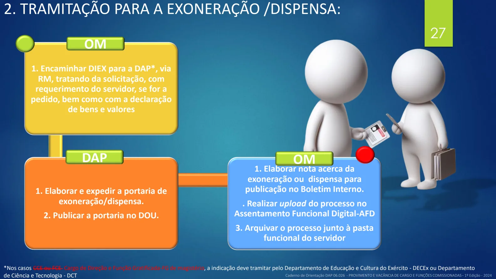
Fontes e elaboração
PDF · p. 28ELABORAÇÃO:
ASSESSORIA TÉCNICA DA SPC/DAP
SUBSEÇÃO DE CARREIRA DA SPC/DAP
JUNHO DE 2024
Para conhecer melhor o assunto, leia as
legislações indicadas no início deste caderno, disponíveis no link:
https://legis.sigepe.gov.br/legis/pesquisa-avancada
Ver página original — tabelas, imagens e diagramas
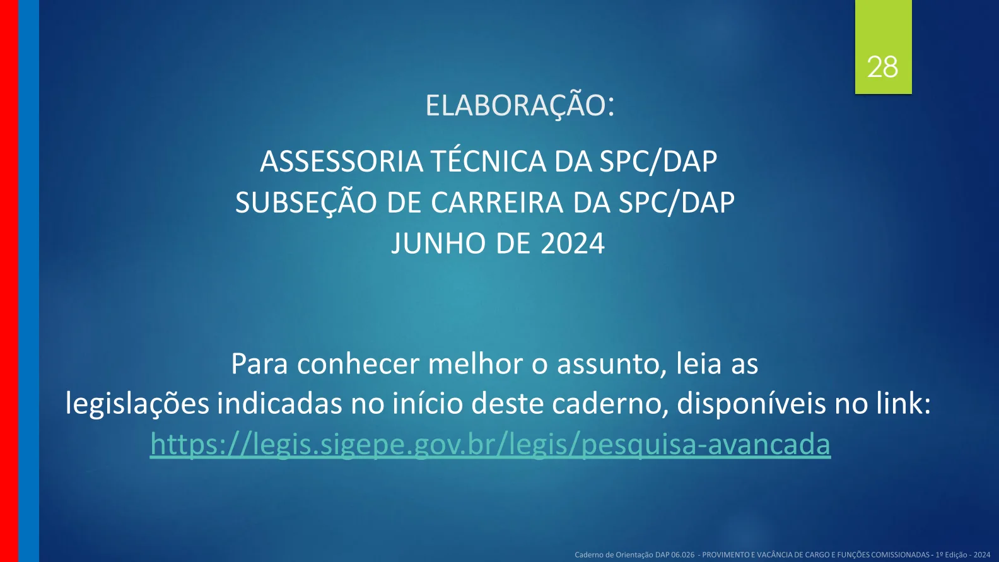
Anexos e modelos
PDF · p. 29ANEXOS
ANEXO A
DIEx - Indicação de Servidor para Cargo Comissionado Executivo - CCE ou Função Comissionada
Executiva - FCE
MINISTÉRIO DA DEFESA
EXÉRCITO BRASILEIRO
(escalões hierárquicos até a OM expedidora)
(Denominação histórica)
DIEx nº
EB: 00000.000000/0000-00
Local e data
Do Chefe do Estado-Maior da Região Militar
Ao Sr Diretor de Assistência ao Pessoal
Assunto: Indicação para exercer CCE/FCE
Indica-se¹______________________________________________________(nome do
indicado)², para exercer o(a) Cargo/Função Comissionado(a) Executivo(a) de ______________ Código
________, em vaga decorrente de _________________________________ (se for o caso)
(Local e data)
___________________________________________________
Nome e assinatura do Chefe do Estado-Maior da Região Militar
¹Poderá constar mais de uma indicação no mesmo documento.
²Em caso de servidor efetivo, indicar o cargo e matrícula.
Ver página original — tabelas, imagens e diagramas
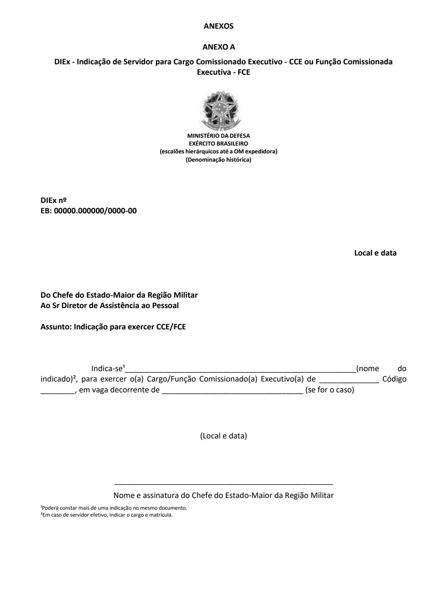
Anexos e modelos
PDF · p. 30ANEXO B
Declaração de Não Acumulação de Cargo Público
MINISTÉRIO DA DEFESA
EXÉRCITO BRASILEIRO
(escalões hierárquicos até a OM expedidora)
(Denominação histórica)
DECLARAÇÃO DE NÃO ACUMULAÇÃO DE CARGOS
Eu¹____________________________________________________________________,
nomeado(a)/designado(a) para o ocupar o(a) Cargo/Função Comissionado(a) Executivo(a) de ____,
Código _____________, por meio da Portaria nº_____, de____/__________/______, publicada n o
DOU nº_______ de ____/___________/______, declaro, para fins de posse e/ou exercício no mesmo,
e de acordo com o inciso XVI, do art. 37, da Constituição Federal e art. 118 a 120, da Lei nº 8.112/90,
que não acumulo cargo público (se acumular, declarar o cargo que ocupa e em que Órgão).
(Local e data)
____________________________
Nome e assinatura do requerente
¹Em caso de servidor efetivo, indicar o cargo e matrícula.
Ver página original — tabelas, imagens e diagramas
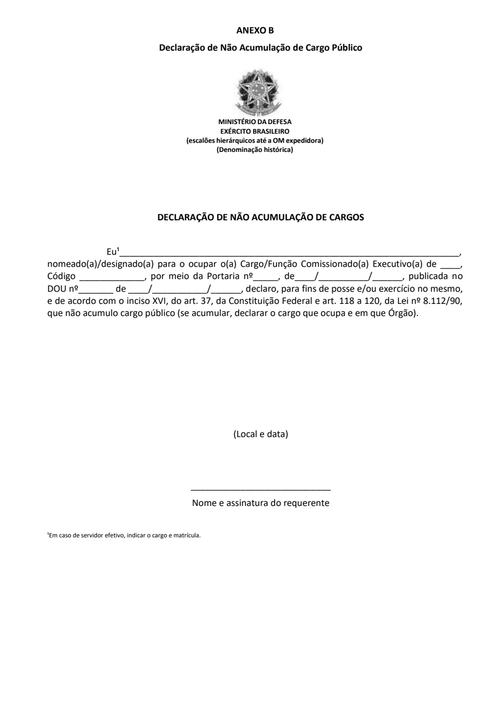
Anexos e modelos
PDF · p. 31ANEXO C
Declaração de Não Percebimento de Seguro-Desemprego (para não servidores)
MINISTÉRIO DA DEFESA
EXÉRCITO BRASILEIRO
(escalões hierárquicos até a OM expedidora)
(Denominação histórica)
DECLARAÇÃO
Eu, (nome)________________________________________________________________,
inscrito no Cadastro de Pessoas Físicas - CPF sob o nº_____________Cargo/emprego público
_______________________DECLARO, conforme previsto no art. 24 da Lei nº 7.9981, de 11 de janeiro de
1990, que a partir do efetivo exercício no cargo ou emprego para o qual fui convocado, não sou
beneficiário do seguro desemprego.
DECLARO, ainda, que as informações aqui prestadas são exatas e verdadeiras e de minha
inteira responsabilidade, sob pena de caracterização do crime tipificado no art. 299 do Código Penal.
___________________________________
Assinatura do (a) Servidor (a)
Ver página original — tabelas, imagens e diagramas
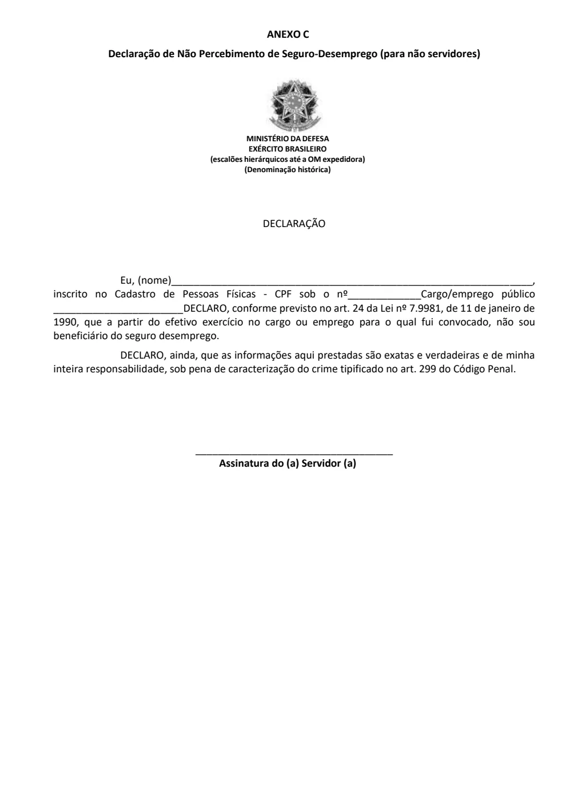
Anexos e modelos
PDF · p. 32ANEXO D
Declaração de Bens e Valores
MINISTÉRIO DA DEFESA
EXÉRCITO BRASILEIRO
(escalões hierárquicos até a OM expedidora)
(Denominação histórica)
DECLARAÇÃO DE BENS E VALORES
Eu¹,____________________________________________________________nomeado(a)
/designado(a) para o ocupar o(a) Cargo/Função Comissionado(a) Executivo(a) de_________
Código_____________, por meio da Portaria nº_____, de____/_____ _____/______, publicada no DOU
nº___________________de ____/___________/______, d eclaro, para fins de posse no mesmo, que
possuo os seguintes bens e valores:
_____________________________________________________________________________________
_____________________________________________________________________________________
_____________________________________________________________________________________
_____________________________________________________________________________________
____________________________________________________________________________________.
(Local e data)
____________________________
Nome e assinatura do requerente
¹Em caso de servidor efetivo, indicar o cargo e matrícula.
Ver página original — tabelas, imagens e diagramas
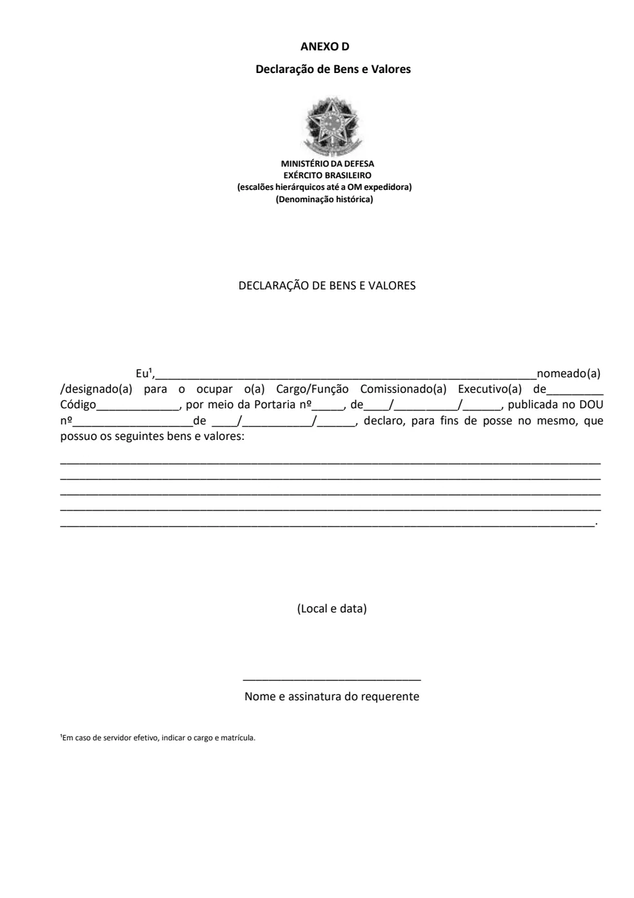
Anexos e modelos
PDF · p. 33ANEXO E
Formulário de Postulante
MINISTÉRIO DA DEFESA
EXÉRCITO BRASILEIRO
(escalões hierárquicos até a OM expedidora)
(Denominação histórica)
FORMULÁRIO DE POSTULANTE A CARGO COMISSIONADO EXECUTIVO-CCE E FUNÇÃO COMISSIONADA
EXECUTIVA-FCE, DE NÍVEIS 1 A 11 (Conformidade com o Decreto no 10.829, de 5 de outubro de 2021)
1. Dados gerais
Nome:
Nome social:
CPF:
E-mail:
Telefone:
Matrícula SIAPE (se houver):
2. Critérios gerais
2.1. ( ) tenho idoneidade moral e reputação ilibada.
2.2. ( ) tenho perfil profissional ou formação acadêmica compatível com o cargo ou a função para o
qual estou sendo indicado(a): _______________________________________________
(especificar o CCE ou a FCE – denominação e nível)
Justificativa quanto à compatibilidade do perfil profissional e/ou formação acadêmica.
(Preencher conforme orientações contidas no item 4 deste Formulário)
2.3. ( ) não me enquadro nas hipóteses de inelegibilidade previstas no inciso I do caput do art. 1o da Lei
Complementar no 64, de 18 de maio de 1990.
3. Critérios específicos (assinalar no mínimo um dos critérios, cuja comprovação deverá observar o item
4)
3.1 CCE e FCE de níveis 5 a 8:
3.1.1 ( ) possuo experiência profissional de, no mínimo, dois anos em atividades correlatas às áreas de
atuação do órgão ou da entidade ou em áreas relacionadas às atribuições e às competências do cargo ou
da função;
3.1.2 ( ) ocupei cargo em comissão ou fu nção de confiança em qualquer Poder, inclusive na
administração pública indireta, de qualquer ente federativo por, no mínimo, dois anos;
Ver página original — tabelas, imagens e diagramas
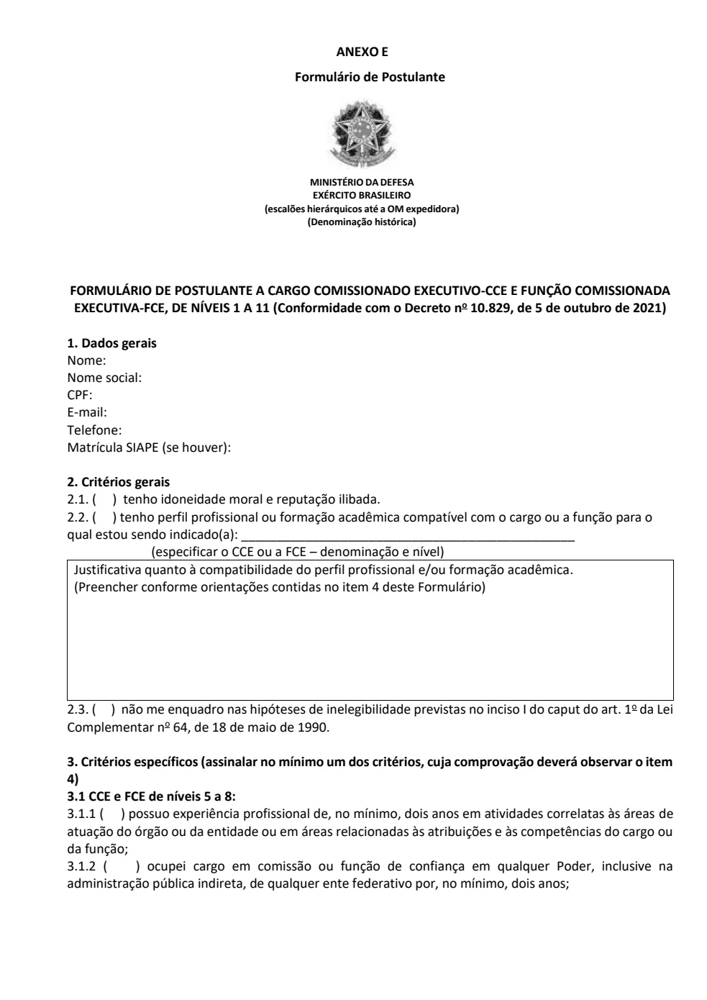
Anexos e modelos
PDF · p. 343.1.3 ( ) possuo título de especialista, mestre ou doutor em área correlata às áreas de atuação do órgão
ou da entidade ou em áreas relacionadas às atribuições do cargo ou da função;
3.1.4 ( ) sou servidor público ocupante de cargo efetivo de nível superior ou militar do círculo hierárquico
de oficial ou oficial-general; ou
3.1.5 ( ) concluí ações de desenvolvimento com carga horária mínima acumulada de cento e vinte horas
ou obtido certificação profissional em áreas correlatas ao cargo ou à função para o qual tenha sido
indicado.
3.2 CCE e FCE de níveis 9 a 11:
3.2.1 ( ) possuo experiência profissional de, no mínimo, três anos em atividades correlatas às áreas de
atuação do órgão ou da entidade ou em áreas relacionadas às atribuições e às competências do cargo ou
da função;
3.2.2 ( ) ocupei cargo em comissão ou função de confiança em qualquer Poder, inclusiv e na
administração pública indireta, de qualquer ente federativo por, no mínimo, três anos;
3.2.3 ( ) possuo título de especialista, mestre ou doutor em área correlata às áreas de atuação do órgão
ou da entidade ou em áreas relacionadas às atribuições do cargo ou da função; ou
3.2.4 ( ) concluí ações de desenvolvimento com carga horária mínima acumulada de cento e vinte horas
ou obtido certificação profissional em áreas correlatas ao cargo ou à função para o qual tenha sido
indicado.
Justificativa quanto à correlação das Ações de Desenvolvimento:
4. Formas de comprovação dos critérios específicos
Item Meio de comprovação
3.1, 3.2 e 3.3 Currículo, com descrição das informações mais relevantes considerando a
compatibilidade com o cargo ou a função para o qual tenha sido indicado(a) .
3.1.1, 3.2.1
Experiência
profissional
Preenchimento do campo de Justificativa do item 2.2, de maneira resumida,
informando:
1 - o órgão de exercício (caso a experiência tenha sido como servidor) ou o local
de trabalho (caso a experiência não tenha sido como servidor);
2 - o período; e
3 - as atividades.
A informações acima deverão ser correlatas às áreas de atuação do órgão ou da
entidade ou em áreas relacionadas às atribuições e às competências do cargo ou
da função, observando o tempo mínimo de experiência profissional para cada
nível de CCE/FCE.
3.1.2, 3.2.2
Experiência em cargo
em comissão ou
função de confiança
Preenchimento do campo de Justificativa do item 2.2, de maneira resumida,
informando:
1 -o órgão de exercício de qualquer esfera de Poder; e
2 -o período de ocupação do cargo em comissão ou função de confiança.
Observação: Deverá ser observado o tempo mínimo para cada nível de CCE/FCE.
Ver página original — tabelas, imagens e diagramas
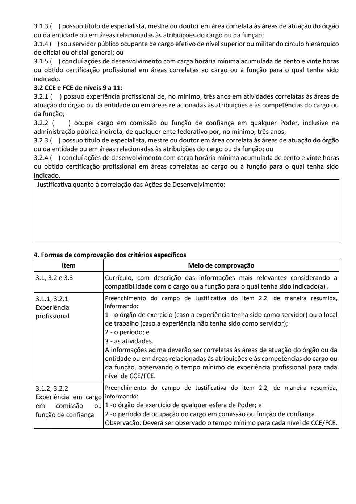
Anexos e modelos
PDF · p. 353.1.3, 3.2.3
Formação acadêmica
Preenchimento do campo de Justificativa do item 2.2, de maneira resumida,
informando:
1 - a formação acadêmica;
2 - o nome da instituição; e
3 - qual o curso.
As informações acima que deverão ser compatíveis com o cargo ou a função para
o qual tenha sido indicado, observada a titulação mínima para cada nível de
CCE/FCE.
3.1.5 e 3.2.4
Ações de
Desenvolvimento
Preenchimento, de forma resumida, informando:
1 - o nome da escola de governo;
2 - qual o curso, e
3 - carga horária.
As informações acima deverão ser em áreas correlatas ao cargo ou a função para
o qual tenha sido indicado, com carga horária mínima acumulada de cento e vinte
horas.
5. Declarações
DECLARO que as informações aqui prestadas são exatas e verdadeiras e de minha inteira responsabilidade,
sob pena de responsabilização administrativa, civil e penal e que estou CIENTE de que as informações
contidas neste formulário poderão ser disponibiliza das de forma transparente, em formato aberto, para
conhecimento da sociedade.
Local e data Assinatura do(a) Indicado(a)
6. Conclusão da aferição dos critérios
Considerando as informações prestadas, informo que o postulante:
( ) preenche ( ) não preenche os requisitos necessários para a ocupação do cargo/função.
Justificativa em caso de não preenchimento dos critérios:
_____________________________________ __________________________________________
Local e data Autoridade responsável pela indicação
Dirigente da OM
7. Dispensa excepcional dos critérios
A aplicação dos critérios gerais e dos critérios específicos poderá ser dispensada, justificadamente, pelo
Ministro de Estado titular do órgão em que estiver alocado o DAS ou a FCPE ou do órgão ao qual se vincula
a entidade em que o DAS ou a FCPE se encontra alocado, de forma a demonstrar a conveniência de
dispensá-los em razão de peculiaridades do cargo ou do número limitado de postulantes para a vaga.
Ver página original — tabelas, imagens e diagramas
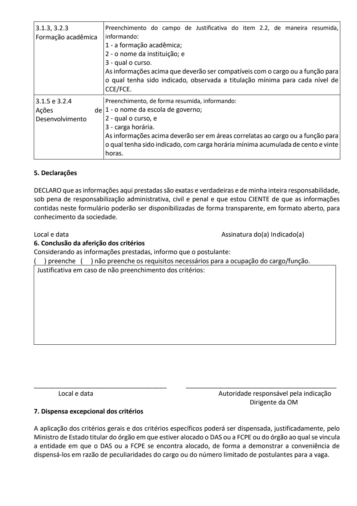
Anexos e modelos
PDF · p. 368. Informações complementares:
a. área de atuação;
b. localização e vinculação do posto de trabalho do servidor na estrutura da OM (denominação do Escalão,
Seção, Assessoria, etc.)
Exemplo: Diretor/Subdiretor/Seção
Ver página original — tabelas, imagens e diagramas
Anexos e modelos
PDF · p. 37ANEXO F
Portaria de Nomeação - Cargo Comissionado Executivo (CCE)
MINISTÉRIO DA DEFESA
EXÉRCITO BRASILEIRO
(escalões hierárquicos até a OM expedidora)
(Denominação histórica)
PORTARIA-DAP/DGP/C Ex No xxx, DE_____DE__________DE 202__
O DIRETOR DE ASSISTÊNCIA AO PESSOAL, no uso da competência que lhe foi subdelegada
pelo Chefe do Departamento-Geral do Pessoal, por meio da PORTARIA-C Ex nº 2.031, de 2 de agosto de
2023, alterada pela PORTARIA -C Ex nº 2.174, de 23 de fevereiro de 2024 , tendo em vista o disposto no
Decreto nº 11.25 3, de 9 de novembro de 2022, e n a PORTARIA - C Ex Nº 1. 868, de 17 de novembro de
2022, e considerando o que consta nos do Processo Administrativo nº xxxxx.xxxxxx/202x-xx, resolve¹
NOMEAR ( NO CASO DE SERVIDOR EFETIVO)
xxxxxxxxxxxxxxxxxxxxxxxxxxxxxxxxx, Cargo, matrícula SIAPE xxxxxxx, para exercer o Cargo
Comissionado Executivo de Assistente, CCE 2.07, da Diretoria de Assistência ao Pessoal.
xxxxxxxxxxxxxxxxxxxxxxxxxxxxxxxxx, Cargo, matrícula SIAPE xxxxxxx, para exercer o Cargo
Comissionado Executivo de Assistente, CCE 2.0 7, da Diretor ia de Assi stência ao Pessoal, ficando
exonerado/dispensado do(a) Cargo/Função Comissionado(a) Executivo(a) de
NOMEAR (NO CASO DE NÃO SERVIDOR)
xxxxxxxxxxxxxxxxxxxxxxxxxxxxxxxxx, formação, CPF ***.xxx.xxx-**, para exercer o Cargo
Comissionado Executivo de Assistente, CCE 2.07, da Diretoria de Assistência ao Pessoal.
xxxxxxxxxxxxxxxxxxxxxxxxxxxxxxxxx, Formação, CPF ***.xxx.xxx-**, para exercer o Cargo
Comissionado Executivo de Assistente, CCE 2.0 7, da Diretoria de Assistência ao P essoal, ficando
exonerado do Cargo Comissionado Executivo de
_______________________________________(nome e posto militar do diretor)
Diretor de Assistência ao Pessoal
¹Em caso de haver apenas um nomeado, não colocar os dois pontos (:) após a palavra “resolve”. Os dois pontos (:) devem ser usados apenas no caso de mais de
um item.
Ver página original — tabelas, imagens e diagramas
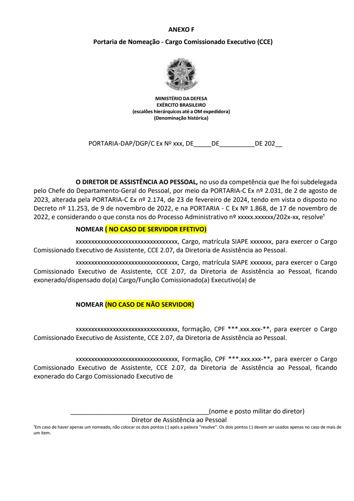
Anexos e modelos
PDF · p. 38Anexo G
Portaria de Designação - Função Comissionada Executiva (FCE)
MINISTÉRIO DA DEFESA
EXÉRCITO BRASILEIRO
(escalões hierárquicos até a OM expedidora)
(Denominação histórica)
PORTARIA-DAP/DGP/C Ex No xxx, DE_____DE_____________DE 202___
O DIRETOR DE ASSISTÊNCIA AO PESSOAL, no uso da competência que lhe foi subdelegada
pelo Chefe do Departamento-Geral do Pessoal, por meio da PORTARIA-C Ex nº 2.031, de 2 de agosto de
2023, alterada pela PORTARIA -C Ex nº 2.174, de 23 de fevereiro de 2024 , tendo em vista o disposto no
Decreto nº 11.25 3, de 9 de novembro de 2022, e n a PORTARIA - C Ex Nº 1. 868, de 17 de novembro de
2022, e considerando o que consta nos do Processo Administrativo nº xxxxx.xxxxxx/202x-xx, resolve¹
DESIGNAR
xxxxxxxxxxxxxxxxxxxxxxxxxxxxxxxxx, Cargo, matrícula SIAPE xxxxxxx, para exercer a Função
Comissionada Executiva de Assistente, FCE 2.07, da Diretoria de Assistência ao Pessoal.
_______________________________________(nome e posto militar do diretor)
Diretor de Assistência ao Pessoal
¹Em caso de haver apenas um nomeado, não colocar os dois pontos (:) após a palavra “resolve”. Os dois pontos (:) devem ser usados apenas no caso de mais de
um item.
Ver página original — tabelas, imagens e diagramas
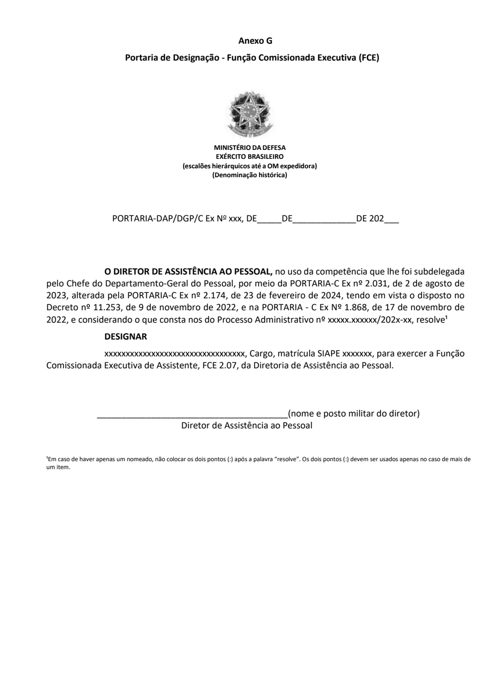
Anexos e modelos
PDF · p. 39ANEXO H
Termo de Posse e Exercício
MINISTÉRIO DA DEFESA
EXÉRCITO BRASILEIRO
(escalões hierárquicos até a OM expedidora)
(Denominação histórica)
TERMO DE POSSE E EXERCÍCIO¹
O_____________________________________________________(autoridade do
órgão que possui a competência para dar a posse), tendo em vista o disposto no art. 13, da Lei nº 8.112,
de 11 de dezembro de 1990, EMPOSSA¹, nesta
data,__________________________________________(nome do empossado)², nomeado para
exercer o (CCE/FCE) denominado__________________Código ________, por meio da Portaria
nº_____, de____/__________/______, publicada no DOU nº_______ de ____/___________/______.
O (a) servidor (a) apresentou os documentos exigidos por lei e prestou o compromisso
de fielmente cumprir com os deveres e atribuições do cargo, bem como se comprometer a observar o
Código de Ética Profissional do Servidor Público Civil do Poder Executivo Federal, aprovado pelo
Decreto nº 1.171, de 22 de junho de 1994 e estão anexos a este termo a declaração de bens e valores
e a declaração de não acumulação de cargos públicos.
O(a) empossado(a) entrou em exercício no referido cargo na presente data.
Para constar, eu__________________________________________, com exercício no
(a)______________________________________(localidade), lavrei o presente TERMO, que vai
assianado pelo __________________________________________e pelo(a) empossado(a).
(Local e data)
__________________________________________________
Nome e assinatura da autoridade competente para dar posse
______________________________
Nome e assinatura do empossado
¹Em caso de exercício na mesma data da posse, i nserir esse dado. Em caso de posse em data diversa da posse, elaborar o termo de exercício em outro
documento.
²Em caso de servidor efetivo, indicar o cargo e matrícula.
Ver página original — tabelas, imagens e diagramas
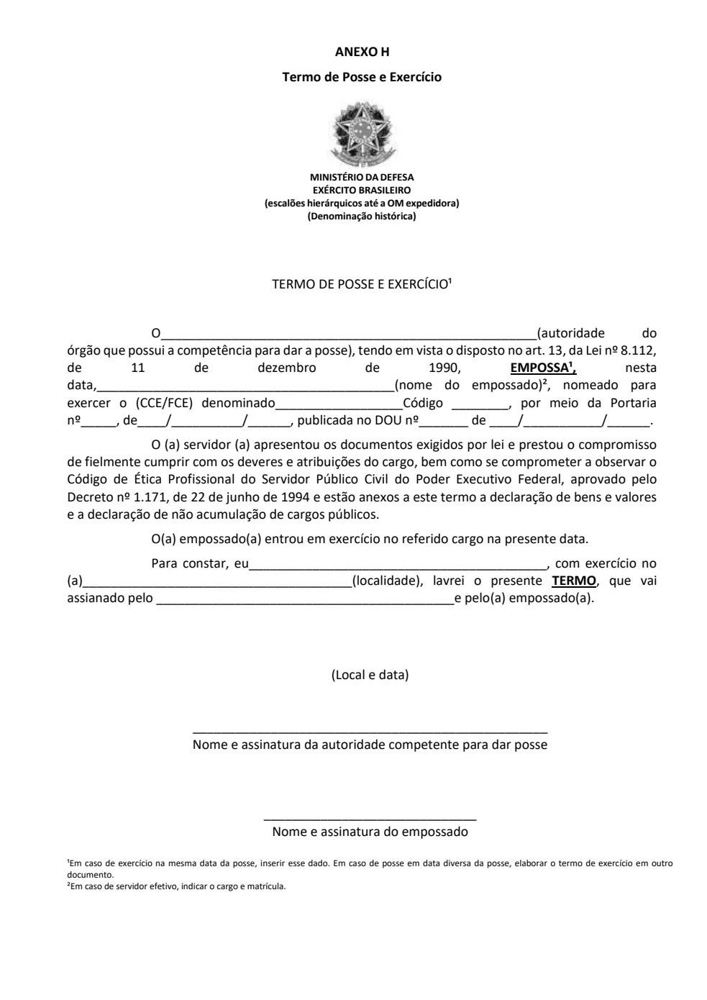
Anexos e modelos
PDF · p. 40ANEXO I
DIEx de Solicitação de Exoneração/Dispensa de Ocupante de CCE e FCE
MINISTÉRIO DA DEFESA
EXÉRCITO BRASILEIRO
(escalões hierárquicos até a OM expedidora)
(Denominação histórica)
DIEx nº
EB: 00000.000000/0000-00
Local e data
Do (Comandante, Chefe ou Diretor da OM)
Ao Sr Diretor de Assistência ao Pessoal
Assunto: exoneração/dispensa de ocupante de CCE/FCE
Solicita-se providências no sentido de (exonerar/dispensar) o
servidor¹_______________________________________(nome)², Matrícula SIAPE nº__________, do
Cargo/Função Comissionado(a) Executivo(a) (CCE/FCE) de _______________ _Código ________, por
motivo de ____________________ (se for o caso), a contar de _____/_______/_______.²
(Local e data)
____________________________
Nome e assinatura do requerente
¹Poderá constar mais de uma indicação no mesmo documento.
² A OM que, ao solicitar exoneração/dispensa, já tenha interesse na indicação de outro ocupante, poderá remeter apenas um exped iente, no qual deverá
constar a indidação e o pedido de exoneração/dispensa.
Ver página original — tabelas, imagens e diagramas
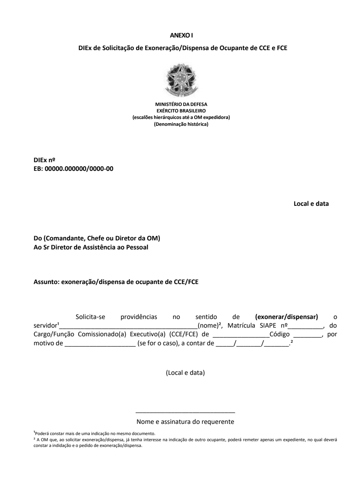
Anexos e modelos
PDF · p. 41ANEXO J
Portaria de Exoneração de Ocupante de CCE
MINISTÉRIO DA DEFESA
EXÉRCITO BRASILEIRO
(escalões hierárquicos até a OM expedidora)
(Denominação histórica)
PORTARIA-DAP/DGP/C Ex No xxx, DE_______DE__________________DE 202___
O DIRETOR DE ASSISTÊNCIA AO PESSOAL, no uso da competência que lhe foi subdelegada
pelo Chefe do Departamento-Geral do Pessoal, por meio da PORTARIA-C Ex nº 2.031, de 2 de agosto de
2023, alterada pela PORTARIA -C Ex nº 2.174, de 23 de fevereiro de 2024, tendo em vista o disposto no
Decreto nº 11.25 3, de 9 de novembro de 2022, e n a PORTARIA - C Ex Nº 1. 868, de 17 de novembro de
2022, e considerando o que consta nos do Processo Administrativo nº xxxxx.xxxxxx/202x-xx, resolve¹
EXONERAR (NO CASO DE SERVIDOR EFETIVO)
xxxxxxxxxxxxxxxxxxxxxxxxxxxxxxxxx, Cargo, Matrícula SIAPE xxxxxxx, do Cargo
Comissionado Executivo de Assistente, CCE 2.07, da Diretoria de Assistência ao Pessoal.
EXONERAR (NO CASO DE NÃO SERVIDOR)
xxxxxxxxxxxxxxxxxxxxxxxxxxxxxxxxx, Matrícula SIAPE xxxxxxx, do Cargo Comissionado
Executivo de Assistente, CCE 2.07, da Diretoria de Assistência ao Pessoal.
_______________________________________(nome e posto militar do diretor)
Diretor de Assistência ao Pessoal
¹Em caso de haver apenas um nomeado, não colocar os dois pontos (:) após a palavra “resolve”. Os dois pontos (:) devem ser usados apenas no caso de mais de
um item.
Ver página original — tabelas, imagens e diagramas
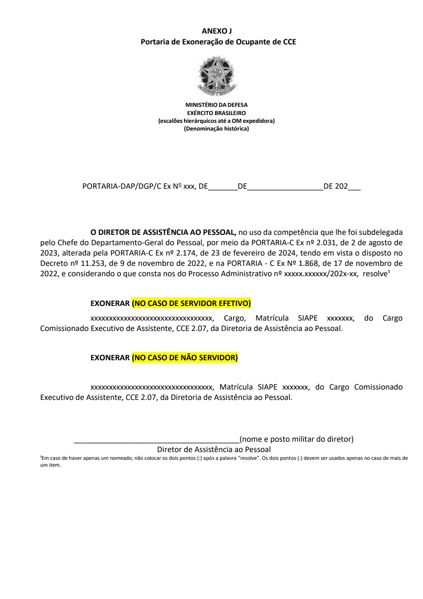
Anexos e modelos
PDF · p. 42ANEXO K
Portaria de Dispensa de Ocupante de FCE
MINISTÉRIO DA DEFESA
EXÉRCITO BRASILEIRO
(escalões hierárquicos até a OM expedidora)
(Denominação histórica)
PORTARIA-DAP/DGP/C Ex No xxx, DE_______DE__________________DE 202___
O DIRETOR DE ASSISTÊNCIA AO PESSOAL, no uso da competência que lhe foi subdelegada
pelo Chefe do Departamento-Geral do Pessoal, por meio da PORTARIA-C Ex nº 2.031, de 2 de agosto de
2023, alterada pela PORTARIA -C Ex nº 2.174, de 23 de fevereiro de 2024 , tendo em vista o disposto no
Decreto nº 11.25 3, de 9 de novembro de 2022, e n a PORTARIA - C Ex Nº 1. 868, de 17 de novembro de
2022, e considerando o que consta nos do Processo Administrativo nº xxxxx.xxxxxx/202x-xx, resolve¹
DISPENSAR
xxxxxxxxxxxxxxxxxxxxxxxxxxxxxxxxx, Cargo, matrícula SIAPE xxxxxxx, da Função
Comissionada Executiva de Assistente, FCE 2.07, da Diretoria de Assistência ao Pessoal.
_______________________________________(nome e posto militar do diretor)
Diretor de Assistência ao Pessoal
¹Em caso de haver apenas um nomeado, não colocar os dois pontos (:) após a palavra “resolve”. Os dois pontos (:) devem ser usados apenas no caso de mais de
um item.
Ver página original — tabelas, imagens e diagramas
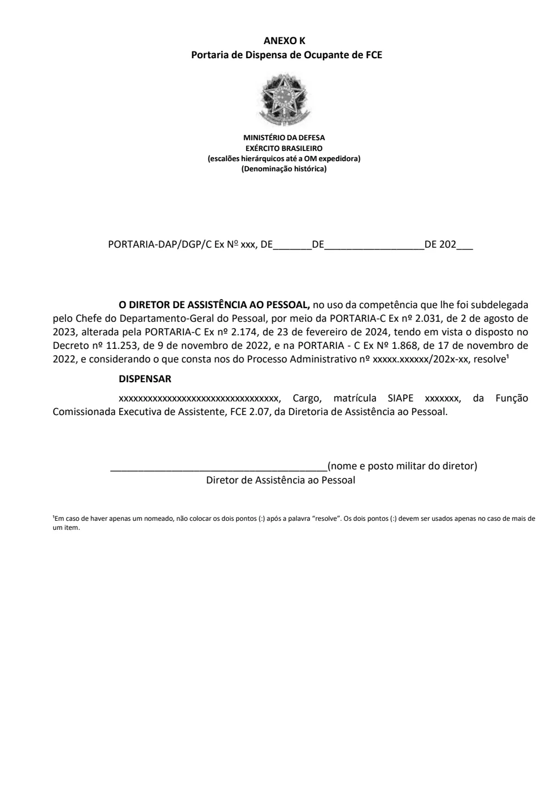